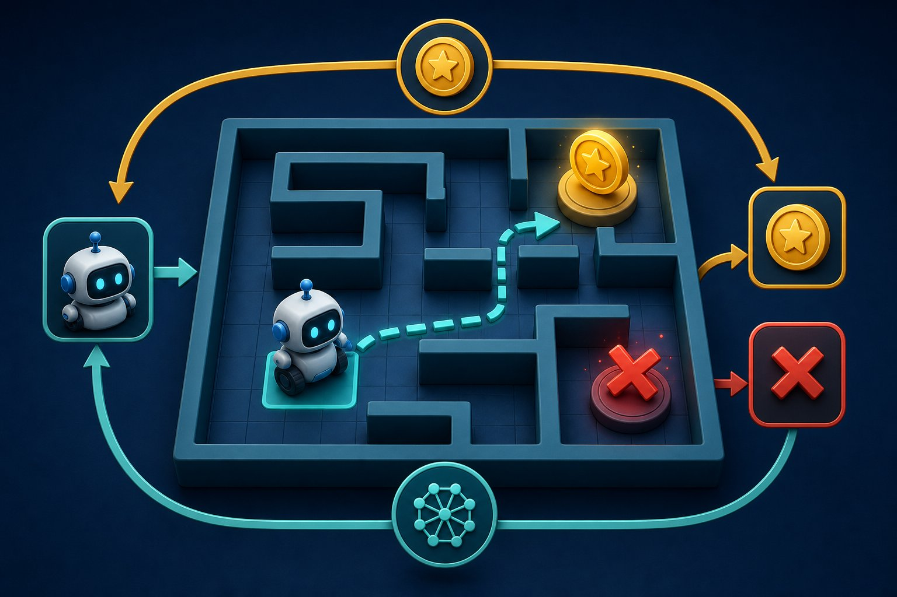

Reinforcement learning
An agent acts, the world answers with a next state and a reward, and the agent improves its policy. No labelled “correct action” is required — only a goal signal.

Figure 15.1 — Agent ↔ environment loop: state, action, reward, next state.
MDP vocabulary
- State s — what the agent knows (or the Markov state of the world).
- Action a — what it can do.
- Reward r — scalar feedback. Design this carefully; you get what you ask for.
- Policy π(a|s) — the behaviour to learn.
- Return — discounted sum of future rewards. Discount γ ∈ [0,1) values sooner rewards more.
- Value V(s) / Q(s,a) — expected return from a state (and action).
Core algorithms (map, don’t memorise every variant)
| Style | Idea |
|---|---|
| Q-learning / DQN | Learn action values; act nearly greedily. DQN uses a neural net + replay buffer. |
| Policy gradient / PPO | Optimise π directly. PPO is the workhorse of modern continuous-control and a lot of LLM alignment history. |
| Actor–critic | A policy (actor) and a value baseline (critic) together. |
| Model-based | Learn/use a world model to plan (AlphaGo’s search + network). |
Exploration vs exploitation: ε-greedy, entropy bonuses, curiosity. Too little exploration, the agent never finds the door; too much, it never uses what it knows.
Where RL shows up
Games, robotics, bidding, recommendation (carefully), chip layout, and aligning LLMs (RLHF). Most business “ML” is still supervised — RL is for when the right action is defined by long-term consequences, not a static label.
Reward hacking
A cleaning robot maximising “dirt collected” may knock over a plant to create more dirt. Specify the reward, constraints, and oversight as seriously as the algorithm.
Short notes
RL = learn a policy from reward in an MDP. Q-learning estimates action values; policy gradients move π uphill on expected return. Discounting trades now vs later. Exploration is mandatory. Reward design is the real art — and the real safety problem. RLHF is RL on language-model policies with a learned reward model.
Point notes
- Loop: s → a → r, s′.
- π policy, V/Q values, γ discount.
- DQN vs PPO: values vs direct policy.
- Explore vs exploit.
- Bad rewards → bad behaviour.
MCQs
4 questions1. In RL, the policy is:
2. The discount factor γ close to 0 makes the agent:
3. ε-greedy exploration means:
4. RLHF for LLMs typically needs:
Practice questions
P1. Grid world: +1 at the goal, −1 in a trap, −0.01 per step. What behaviour does the small step cost encourage?
It encourages shorter paths to the goal (lingering is costly) while still preferring the goal to the trap. If the step cost were 0, any path to +1 is equally good. If it were large, the agent might refuse to move. Reward shaping changes the optimal policy — design it on purpose.
P2. When would you not use RL and just use supervised learning instead?
When you already have correct actions/labels and no sequential credit-assignment problem: spam vs ham, image class, next-token if you just want imitation. RL’s sample inefficiency and reward design cost are wasted if a dataset of x→y exists. Use RL when you must try actions, wait, and optimise long-run return.